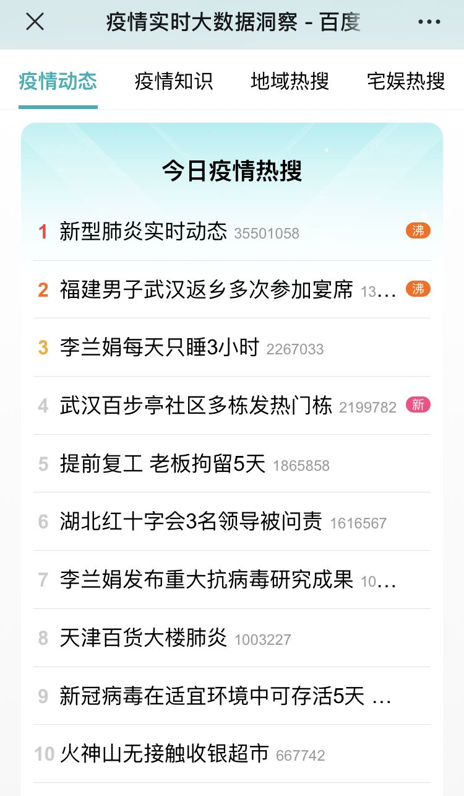
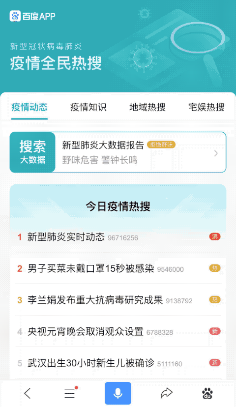
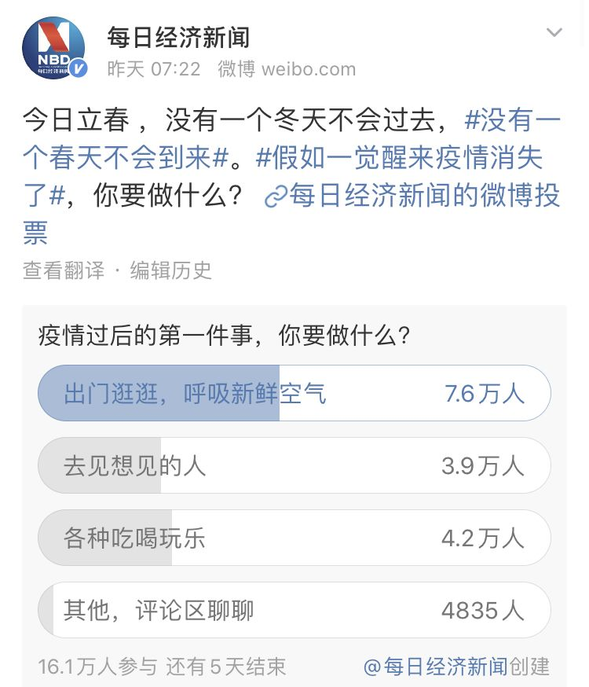
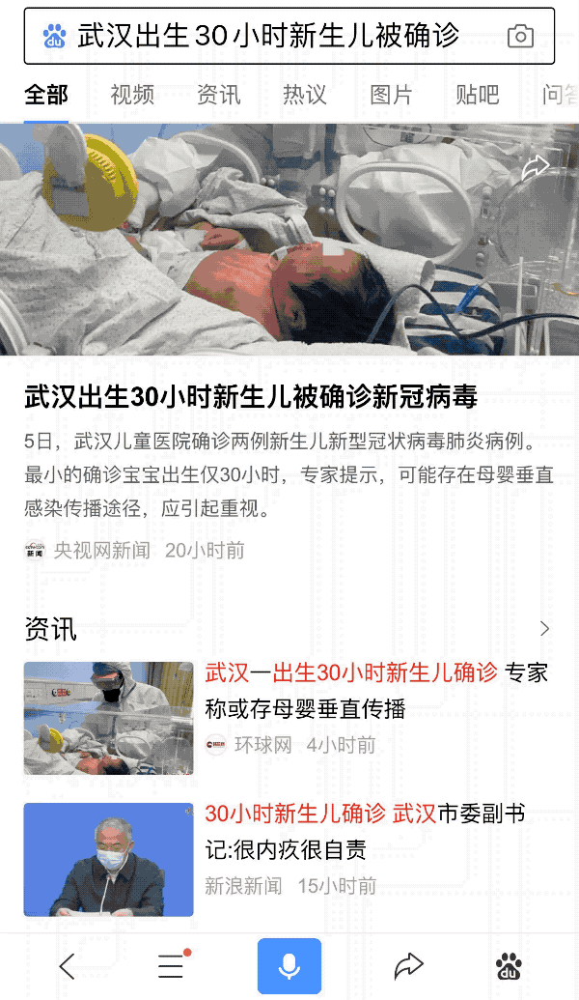

500万人离开武汉，我是其中之一 | 我的武汉日志
原文链接 备份链接 若干年后回望，这一定是一段值得铭记的日子。因为新型冠状病毒感染的肺炎疫情，许多家庭无法团圆。疫情数据地图的每次刷新都令人揪心。我们和千万武汉人在一起，这不只是一句安慰，因为没有人能够置身事外。 之前，我们向用户征集这 …
_
今天是钟南山院士向公众宣布新冠肺炎情况后的第17天，也是武汉封城的第14天，此刻的疫情地图已经发生巨大改变，而在如此疫情之下，我们必然会忍不住刷手机看新闻，关注奋战在一线的医护人员和身处疫情区的同胞，期盼所有人的生活能尽早回归日常轨道。
正因为我们的关心，这些关于疫情发展、有向好趋势的词条总能在第一时间冲上热搜榜。以这张百度疫情实时全民热搜榜单为例，可以说上榜的每一条数据背后，都是无数双注视的眼睛，每一条搜索内容，也都牵动着无数颗跳动的心。

2月5日15时热搜榜
_
_
从未如此渴望春风拂面
By@敦煌研究院
_
当我们还在哀嚎“2019太难了”时，大概谁都没料想到2020年第一个月会如此狠绝，但时间无法重启，只能硬扛下去。疫情当前，人们最关注的话题莫过于“疫情最新进展”，就像百度疫情热搜榜首位始终是“新型肺炎实时动态”，而且有关疫情的任何消息都会迅速冲上榜单。

_
_
我问家人和朋友，关于疫情你们最关心什么。他们的回答如出一辙，不再因为地域、年龄、身份的不同而有所差别：疫情什么时候能好转、能控制住，什么时候能过去。
@静静今天自闭了吗：#在家办公怎么感觉更累了# 在家学习也好累，即使再闲也不想写作业，好想疫情快点控制住啊。
@花贰椰：我知道疫情总会控制住的，想把时间快进到控制住的时间点。
_
_
前两天是立春，#没有一个春天不会到来# 占据热搜前排。在 @每日经济新闻 发起的投票「疫情结束后，你想做的第一件事是？」中，16.1万用户中有7.6万人选“呼吸新鲜空气”，4.2万人选“各种吃喝玩乐”，3.9万人选“去见想见的人”。

_
_
这结果令人感慨又心酸。想必经此一役，越来越多人都深刻体会到了，原来随时随地“呼吸新鲜空气”“吃喝玩乐”“见想见的人”，并非轻而易举唾手可得，而是一件值得珍惜和感恩的幸事。只是不知道这一次，我们什么时候才能再次拥有这些幸运。
@帅气boys的六零：疫情得到控制后，我想第一时间见到你。
@寻找一个视我如命：疫情赶紧控制住吧，哪里都不能去的感觉真的好难受。
面对疫情，其实每个人都有自己的战场和“本职工作”。医护人员治病救人，警察等基层工作人员维护秩序，快递外卖小哥运送物资……而对于不在一线的人来说，则是做好防护、静心等待。加缪在《鼠疫》中写道，“这一切与英雄主义无关，而是诚挚的问题。这种理念也许会惹人发笑，但是同鼠疫做斗争，唯一的方式就是诚挚……我不知道诚挚通常指什么，但是就我的情况而言，我知道诚挚就是做好本职工作”。
要有耐心，要沉住气，因为这世上很多事情做完之后，都不是在当下就能看到结果，但在未来的某个时刻，那个影响和转折就会慢慢显现到来。并且在这种时候，信心和行动同样重要，我们也必须怀抱希望，笃信在星月皆无的至暗寒冬后，春天必会如约而至。
_
_
我们必须记得，
他们是生命，而不是数字
By@世界卫生组织
_
_
_
在一段时间后，人们看着不断攀升的确诊数字，可能会不自觉感到麻木。但事实上，那些“倒霉版的我们”依然陷于水深火热，在屏幕那头正一刻不停地与疫情抗争着。如果说“要不惜一切代价”赢得抗疫战的最终胜利，那“一切代价”里包裹的就是一个个有血有肉的生命。而暂时幸运的我们能做的，就是不要袖手旁观，不要往伤口上撒盐，不要让事情变得更糟。
_
_

_
_
@尉迟燕窝：一定要牢记个体。别人也是活生生的人，别人的家人也会流泪，会恐惧，会害怕生离死别……女儿追着殡仪馆的车喊着妈妈，在网上打出“去世了”三个字的人，是失去父母的人……
人类的悲欢有时是相通的，所以北野武在日本地震后讲的这句话最近被大量转发，“灾难并不是死了两万人这样一件事，而是死了一个人这件事，发生了两万次”。这种对苦难的共情，也正是我们被日本寄来物资上写着的“山川异域，日月同天”“岂曰无衣，与子同袍”深深打动的原因。
另一边，还有一群不在漩涡中心却也深陷困境的人们。往年此时已是春运后期，大批人陆续离乡准备复工，而今年这一切都在延迟，何时恢复也未可知。不工作的日子并没有想象中那样美好，甚至对不少人来说，没有收入可能比疫情本身更加可怕。那些闭门歇业的小店和工厂关联着的，都是一个个需要养孩子、还房贷、支撑家庭、维持生活的普通人。
_
_
@小白兔_大老虎呀：楼不会塌，只是偶尔晃动掉下些碎瓦，砸死了出来搬运吃食的蚂蚁。
“我家养的一万多只鸡，屠宰场不开工，饲料厂也不开工，卖没法卖，养没法养……”
“家里堂哥开小餐馆，春节假期备的蔬菜用不掉，容易坏的都分给亲戚朋友了。还有一个嫂子开花店，往年春节卖的超好，今天花叶子都黄了……”
“家附近卖水果的老板，给大家分橙子，说过年了也没有人买，放放都放坏了，大家拿走吃吧……”
正所谓“没有人是一座孤岛，每个人都是大陆的一角”，我们每个人都不免受到疫情的冲击和波及。但好在寒冬之下，依然有力量在拯救局面——北京医学会跟百度合作推出在线医生咨询平台，分流线下就诊需求，提高医疗资源利用率；超过二十家房企推出减免租金举措，以减轻商户压力；新零售电商大胆尝试“租借”部分暂停营业餐厅的员工，让闲置劳动力得到有效利用；不少企业主自掏腰包，坚持给员工发工资；陆续有房东主动免租，与租客共度难关……救他就是自救，助人就是帮己，“共克时艰”这四个字变得沉甸甸的同时，也饱含滚烫的人情味。
_
_
世上没有从天而降的英雄，
只有挺身而出的凡人
By@网友
_
_
_
疫情残酷，但残酷中往往另有安慰。在焦虑、担忧和无助之外，还有无数的“为众人抱薪者”。奔赴武汉带领团队研究病毒的73岁传染病学家李兰娟，因“每天只睡三小时”上了热搜，武汉大学人民医院副院长江应安印证了这一说法，“70多岁的老人了，真的是不分昼夜，她凌晨4点下火车，吃过早餐就接着开会。各个医院的专家、基层的管理者都要见面，把她对疾病的认识告诉我们。我感觉，这个老太太真的是我们中华民族的脊梁”。
_
_

_
_
湖南衡阳90后乡镇医生宋英杰，自大年初一起就坚守岗位，在高速路口收费站检测排查体温，直到2月3日值班交接后回到宿舍突然猝死，因公殉职。武汉金银潭医院院长张定宇，身患渐冻症、拖着一双跛脚却依然坚持工作，动员大家“保卫我们的武汉，保卫武汉人民”。而自疫情爆发以来，已有数位奔走于一线的公安民警献出生命。基辛格在《论中国》中写道，“中国人总是被他们之中最勇敢的人保护得很好”。而这些大大小小的保护，给了身在困境中的人们以力量和希望。
@豆豆：在湖北，小区只让出不让进了，物业统一为大家采购蔬菜食物，妈妈今天在群里说需要一袋盐和其它做菜的基础佐料，不一会就有其他业主帮忙挂在门外。半袋盐，一节藕，一个包菜的。妈的，眼泪就是止不住，大家加油，爱这个世界。
是的，人间不容易，生存一直以来都是永恒的主题。明天打开搜索榜，疫情人数还会增加，新一轮或好或坏的消息又会出现，但这些热搜就像一面镜子，折射出最真实的我们，映照出生活的境况和世界的模样。
而这些真实且及时的搜索数据，也在很多时刻发挥着作用和价值，对日常生活和社会发展来说至关重要。对普通大众而言，这些搜索数据是获取外界信息、了解各地人们关注点和需求的直观渠道，是个人建立认知和开展行动的判断依据；对机构、公司乃至政府而言，它们则是助力评估外部大环境的有效数据，是作出正确决策的必要参考条件。
但无论何时都别忘了，这些数据背后是跳动的心脏和鲜活的生命，所以别让热血冷掉，“能做事的做事，能发声的发声，有一分热，发一分光”。尽管没有人能确定具体是哪天，但我们从来不曾怀疑——“疫情结束了”这样的字眼，终会出现在百度搜索榜Top1。
_
_
（图片来自互联网）
策划：三联.CREATIVE
监制：李雨旋
作者：雪山
微信编辑/设计排版：王昊天
⊙文章版权归《三联生活周刊》所有，欢迎转发到朋友圈，转载请联系后台。

_
原文链接 备份链接 若干年后回望，这一定是一段值得铭记的日子。因为新型冠状病毒感染的肺炎疫情，许多家庭无法团圆。疫情数据地图的每次刷新都令人揪心。我们和千万武汉人在一起，这不只是一句安慰，因为没有人能够置身事外。 之前，我们向用户征集这 …
原文链接 备份链接 防护和消毒还是很重视的，每送一次，全车消毒一次。 口 述 | 尹 达 整 理 | 黄 祺 我叫尹达，现在是武汉龙安社区的一名志愿者司机。 我的工作是保险销售，疫情发生之前，我一般每天一早去公司，然后出门拜访客户。如果去 …
原文链接 备份链接 “‘小汤山模式’医院，其实就是典型的野战医院，特点是简易、适用，因此建设难度不在于施工，而在于‘时间实在太紧张了’。” 全文4622字，阅读约需9分钟 2月5日，第二所武汉版“小汤山医院”——雷神山医院建设进入冲刺阶 …
原文链接 备份链接 疫情封锁之下，在一座城市中，人们的境遇也各不相同。市民被分隔成微小的个体，以往芜杂的日常生活具体为物资采购和一日三餐。普通人谨小慎微地关注着体温、情绪和城市的变化，试图平复暴风眼周围一丝丝微弱的气流。 作 …
原文链接 备份链接 你投我以桃，我报你以李。有一种报恩，叫以善回应善。 全文1281字，阅读约需2.5分钟 新型肺炎疫情爆发以来，“一方有难，八方支援”的温暖故事每天都在上演，不少人用实际行动为武汉加油，也见证着社会互助的力量。 这两 …